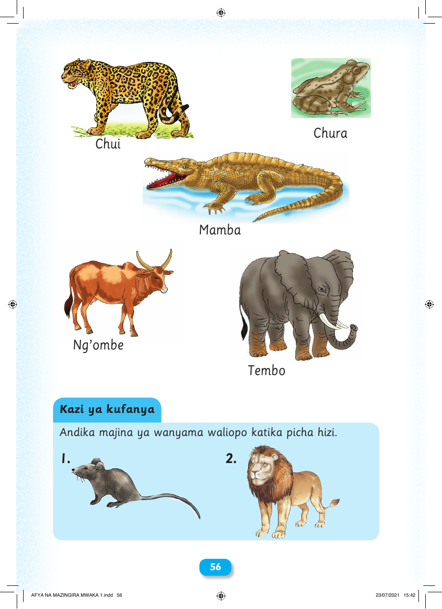

 56 Kazi ya kufanya Andika majina ya wanyama waliopo katika picha hizi. Chui Chura Mamba Ng’ombe Tembo 1. 2. AFYA NA MAZINGIRA MWAKA 1.indd 56 23/07/2021 15:42 Chura Chui Mamba Ng’ombe Tembo Kazi ya kufanya Andika majina ya wanyama waliopo katika picha hizi. 1. 2. 56 AFYA NA MAZINGIRA MWAKA 1.indd 56 23/07/2021 15:42